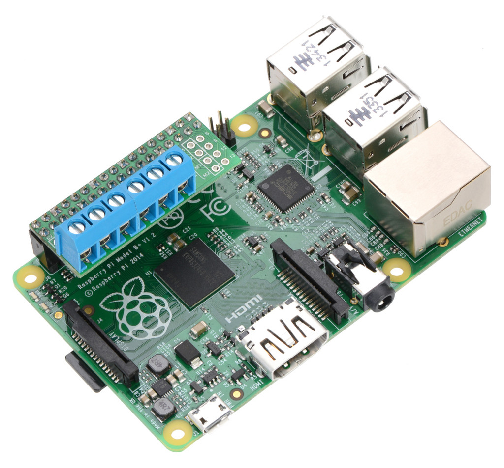

raspberry pi に直接挿せるデュアルモータードライバを試したのでメモ。
Pololu DRV8835 Dual Motor Driver Kit for Raspberry Pi
 image: https://www.pololu.com/product/2753
ザクッと挿せてDCモータを2つ扱えるので楽です。
用意するもの
- Raspberry Pi 2 or 3
- Pololu DRV8835 Dual Motor Driver Kit for Raspberry Pi
- わたしはここで買いました
- 適当なDCモータ（動作確認用）
ドライバのセットアップ
https://github.com/pololu/drv8835-motor-driver-rpi を見ながら:
sudo apt-get update
sudo apt-get install -y python-dev python-pip
sudo pip install wiringpi
git clone https://github.com/pololu/drv8835-motor-driver-rpi.git --depth 1
pushd drv8835-motor-driver-rpi
sudo python setup.py install
popd
で完了。
動作確認
sudo python example.py
でモータの動作確認をしておきましょう。